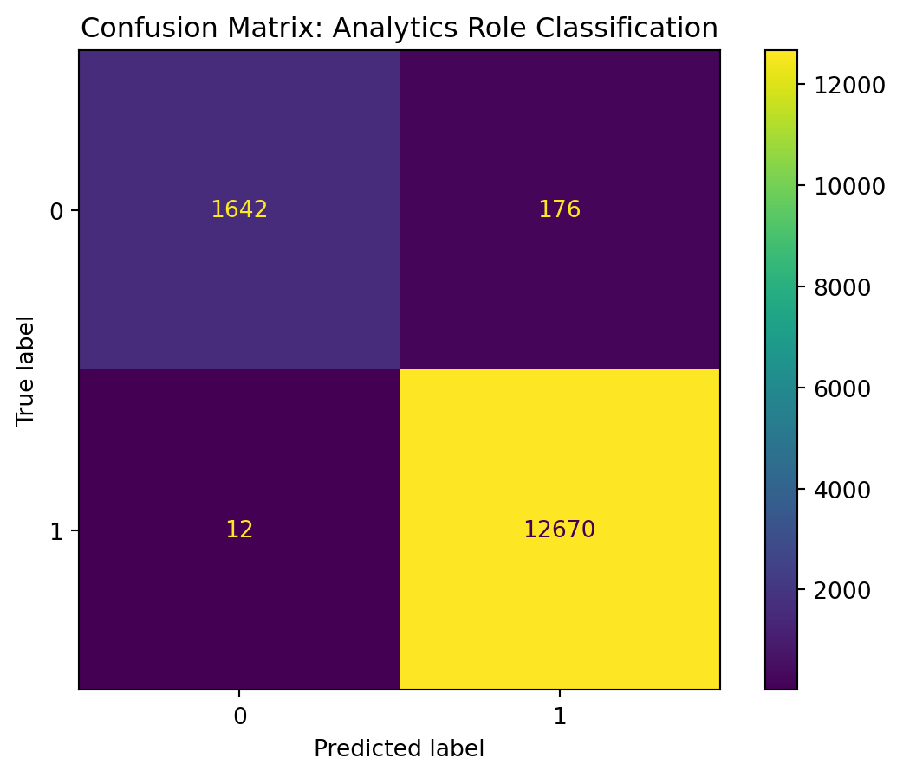

This page presents the main modeling methods used in the project. The goal is to identify patterns in analytics-related job postings and evaluate which factors help explain role groupings and salary differences. The methods include KMeans clustering, salary regression, and role classification.
The selected variables reflect the main dimensions emphasized in the project: skills, experience, education, location, work arrangement, and occupational grouping. For salary analysis, numeric variables are first inspected to see how strongly they relate to annual salary.
annual_salary_mid 1.000000
salary_mid 1.000000
max_experience 0.533913
min_experience 0.493927
skills_all_count NaN
skills_specialized_count NaN
skills_common_count NaN
skills_software_count NaN
total_skill_count NaN
Name: annual_salary_mid, dtype: float64
KMeans Clustering
KMeans clustering is used to identify natural groupings of job postings based on numeric job characteristics. The clustering results are then compared with SOC labels to evaluate whether the clusters align with occupational categories.
A regression model is used to estimate annual salary midpoint based on experience, skill counts, remote arrangement, education, location, and occupation group.
cm = confusion_matrix(y_test_clf, clf_pred)disp = ConfusionMatrixDisplay(confusion_matrix=cm)disp.plot()plt.title("Confusion Matrix: Analytics Role Classification")plt.show()

Interpretation for Job Seekers
The clustering results show whether job postings naturally group into distinct types and whether those groups resemble official occupational classifications. The regression model evaluates which job characteristics are associated with salary outcomes, while the classification model identifies which structured features best distinguish analytics-related roles. Together, these methods help translate labor market data into practical guidance for students and job seekers.